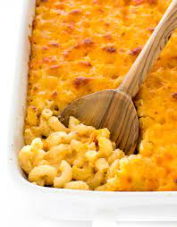

Macaroni and Cheese

Description
A cheesy baked mac and cheese recipe you will love.
Easy to make and makes for great leftovers.
Ingredients
- Macaroni
- Butter
- Flour
- Cheddar cheese
- Milk
- Bread crumbs
Steps
- Boil Macaroni
- Make cheese sauce
- Mix sauce and macaroni
- Melt butter and stir in bread crumbs
- Top macaroni with brea crumb mixture and bake for 30 mins